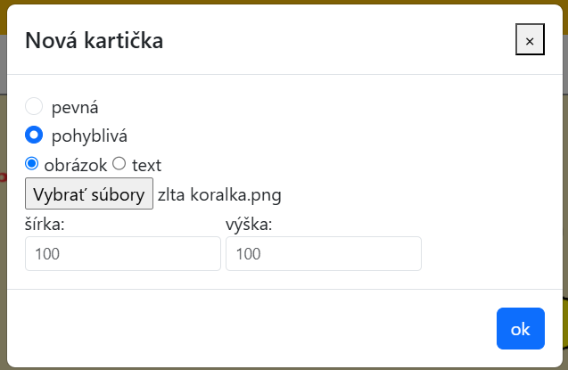

Návod
Učiteľ má možnosť vytvárať vlastné aktivity a úlohy, ktoré žiaci môžu riešiť.
Pri vytváraní aktivít je dobré začať nastavením pozadia, aby mal používateľ lepšiu predstavu, kam ukladať kartičky.
Pri vytváraní aktivít je dobré začať nastavením pozadia, aby mal používateľ lepšiu predstavu, kam ukladať kartičky.
Ovládanie
Pridaj kartičku
Po kliknutí na toto tlačidlo sa zobrazí okno a vieme si zvoliť parametre kartičky, ktorú chceme
vytvoriť.
Môže obsahovať text alebo obrázok.
Pevnú kartičku počas hrania už nie je možné posúvať Pohyblivé kartičky možno posúvať aj počas hrania.
Položené kartičky sa dajú ťahaním presúvať. Ťahaním za rohy sa dá upravovať ich veľkosť.
Pevnú kartičku počas hrania už nie je možné posúvať Pohyblivé kartičky možno posúvať aj počas hrania.
Položené kartičky sa dajú ťahaním presúvať. Ťahaním za rohy sa dá upravovať ich veľkosť.
Uprava položenej kartičky
Položená kartička sa dá meniť kliknutím pravým tlačidlom myši. Zobrazí sa kontextové menu. Pre textovú kartičku sa dá zmeniť farba a text.
Kartičku je možné vymazať, alebo vytvoriť jej kópiu.
Kategória kartičky
Zmena pozadia
Vymaž plochu
Miešanie pohyblivých kartičiek pri spustení hry
Zobraz koncové pozície pri hre
Zobraz mriežku
Ulož domovský stav
Ulož finálny stav
Spusti aktivitu
Ulož aktivitu
Načítaj aktivitu
Vytváranie aktivít
Zoraďovacie aktivity
Ukážeme si to na príklade pečenia koláča. Postup bude mať 5 krokov: Príprava surovín, miešanie cesta, vylievanie cesta na plech, vloženie plechu do rúry, vybratie upečeného koláča.
Každý z týchto krokov bude znázornený obrázkom a žiak bude mať za úlohu určiť, v akom poradí je potrebné tieto kroky vykonať.
Pripravíme si obrázky – jeden pre každý krok postupu. Obrázky si môžme nakresliť alebo nájsť na internete. Spustíme si prostredie a začneme vytvárať kartičky.
1. Klikneme na tlačidlo Zobrazi sa modálne okno v ktorom vyberieme parametre novej kartičky. Zvolíme pohyblivá - keďže budeme chcieť kartičky presúvať. Zaklikneme voľbu obrázok, klikneme na tlačidlo Vybrať súbory a zvolíme obrázok prvej kartičky. Ak chceme nechať obrázok v pôvodnej veľkosti, nič ďalšie nevypĺňame a klikneme na tlačidlo OK. Postup zopakujeme 5 krát, vždy zvolíme ďalší obrázok.
2. Klikneme na tlačidlo , čím sa zmení mód na presúvanie. Posúvame obrázky ťahaním po ploche na miesto, kde chceme, aby sa nachádzali vo finálnej pozícii. Všetky postupne presunieme.
3. Kliknutím na tlačidlo sa uloží ich finálna pozícia. Napravo vidíme na hornej zmenšenej ploche, kde sa obrázok bude nachádzať na konci aktivity.
4. Finálny stav je nastavený, potrebujeme nastaviť už len domovský stav. Kartičky môžeme nechať na mieste, klikneme na tlačidlo čím sa uloží ich domovská pozícia.
Musíme si dať pozor, aby bolo nastavené náhodné miešanie kartičiek na ľavom paneli s ikonkou .
5. Aby žiaci vedeli, čo majú robiť a do akého poradia majú kartičky zoradiť, môžeme si vytvoriť vlastné pozadie s textom a číslami a len ho vložiť do pozadia ako obrázok. Môžeme však do pozadia nastaviť iba farbu a vložiť kartičky s číslami. Klikneme na tlačidlo novej kartičky a zvolíme pevnú a textovú. Môžeme pridať kartičku so zadaním a 5 ďalších kartičiek, očíslovaných 1-5 a umiestniť ich nad obrázky. Vieme zadať veľkosť podľa potreby.
6. Aktivita je hotová a môžeme ju uložiť a spúšťať.
Priraďovacie/klikacie aktivity
1. Kliknutím na tlačidlo pridáme novú kartičku. Zvolíme pevnú, pretože na ňu budeme iba klikať, ale premiestňovať ju nebude treba. Zvolíme obrázok a pri vyberaní obrázkov označíme a vložíme všetky 4 obrázky naraz. Toto zopakujeme 4x.
2. V móde presúvania ich presunieme vedľa seba na spodok plochy.
3. Znova pridáme kartičku, teraz už len jednu pre každého robota. Vytvoríme takto 4 rôzne pevné kartičky s jedným obrázkom. Presunieme každú nad jednu kartičku, čo už bola uložená.
4. Tlačidlom uložíme domovský stav.
5. Pri kliknutí na kartičky, do ktorých sme vložili viac obrázkov vidíme, že sa obrázok zmení. Kliknutím viac krát ho zmeníme na obrázok robota, čo je nad ním.
6. Aktivita je hotová, môžeme si ju uložiť alebo zahrať.
Doplňovacie aktivity
Ako pozadie si pripravíme obrázok s postupnosťou korálok na náhrdelníku, 4 budú vynechané. Okrem toho si pripravíme obrázky jednotlivých korálok - žltá, modrá, červená.
1. Vytvoríme pohyblivú kartičku. Ako obrázok vyberieme jednu z korálok. Postupne takto pridáme všetky 4 korálky - červenú, modrú, 2x žltú.

2. Posunieme kartičky nabok, aby bolo vidno celý náhrdelník na pozadí.
3. Pre obe žlté korálky zaznačíme rovnakú kategóriu. Klikneme pravým tlačidlom myši na kartičku, klikneme na tlačidlo niektorej farby, rovnakú pre obe kartičky.
4. Uložíme domovskú pozíciu hry kliknutím na tlačidlo
5. Presunieme obrázky korálok na miesta, kam patria. Kliknutím na uložíme finálny stav.
6. Aktivita je hotová, môžeme ju spustiť alebo uložiť.
Kategorizačné aktivity
2. Umiestnime ich na vrch plochy, kliknutím na tlačidlo posúvania a ťahaním myšou.
3. Vytvoríme pohyblivú kartičku rovnakej šírky a výšky ako predtým, nastavíme jej ďalšiu farbu a napíšeme na ňu slovo stredného rodu. Vytvoríme ich viac, usporiadame ich na dolnej časti obrazovky.
4. Všetkým kartičkám, ktoré sú vzoru mesto, pravým kliknutím zvolíme jednu farbu kategórie. Pre každý vzor si vyberieme jednu farbu a nastavíme túto kategóriu všetkým slovám daného vzoru.
5. Kliknutím na tlačidlo nastavíme domovský stav.

6. Zaklikneme presúvanie. Kartičky presunieme ťahaním do stĺpcov pod ich vzor.
7. Klikneme na a uložíme tak aj finálny stav.
8. Aby boli slová zamiešané, dáme si pozor, aby bolo zakliknuté náhodné miešanie kartičiek , a taktiež obrysy kartičiek vo finálnom stave .
Aktivita je hotová.
Spúštanie aktivít a kontrola riešenia
Tlačidlom spustenú aktivitu zavrieme a vrátime sa do módu upravovania aktivity.
Tlačidlo slúži na kontrolu riešenia. Kliknutím naň sa dozvieme, či je úloha vyriešená správne, alebo nie.
Ak aktivitu spustiť nejde, môže to byť preto, že v domovskom stave je iný počet kartičiek, ako vo finálnom stave. Aktivitu nepôjde spustiť ani ak sme presunuli kartičku, ktorá je pevná.
Ukladanie a načítavanie aktivít
Klikneme na tlačidlo . Vybrať súbor - zvolíme si nachystanú aktivitu vo forme .json súboru. Kliknutím na tlačidlo sa plocha celá prekreslí a vykreslí sa aktivita zo súboru. Vieme ju potom rovno spustiť, alebo ešte ďalej upravovať.